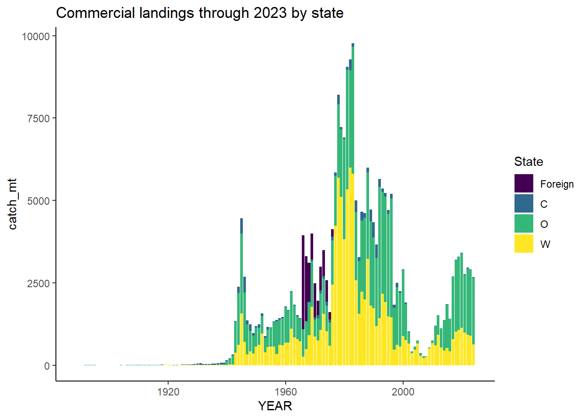
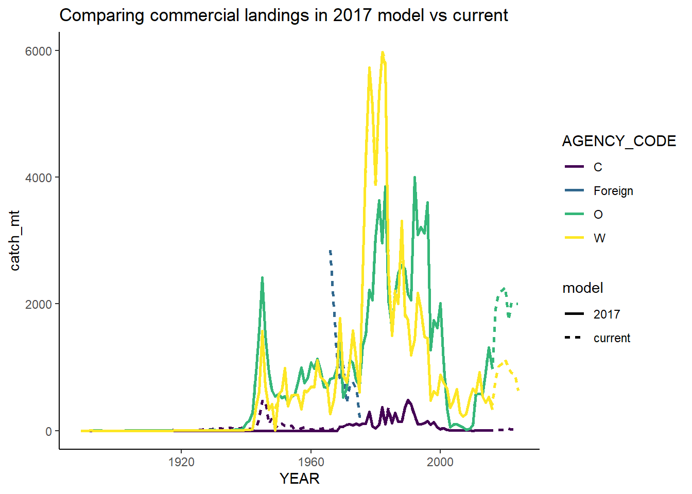
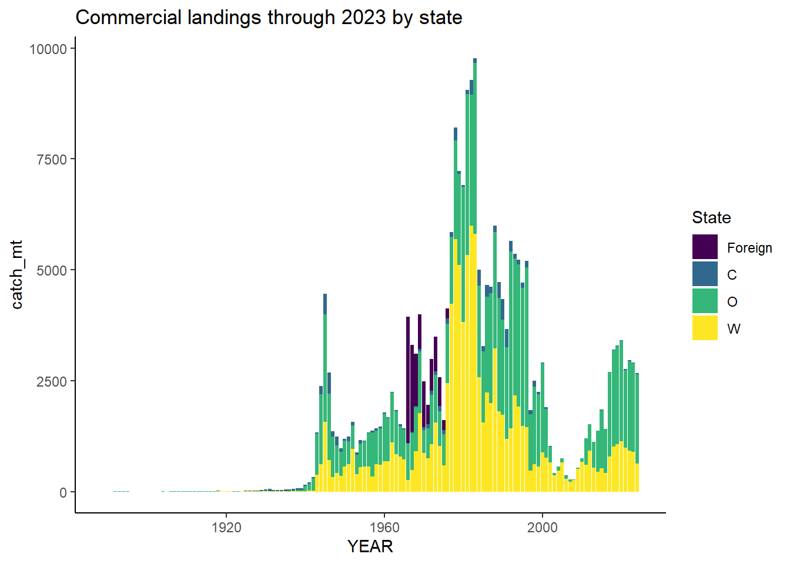
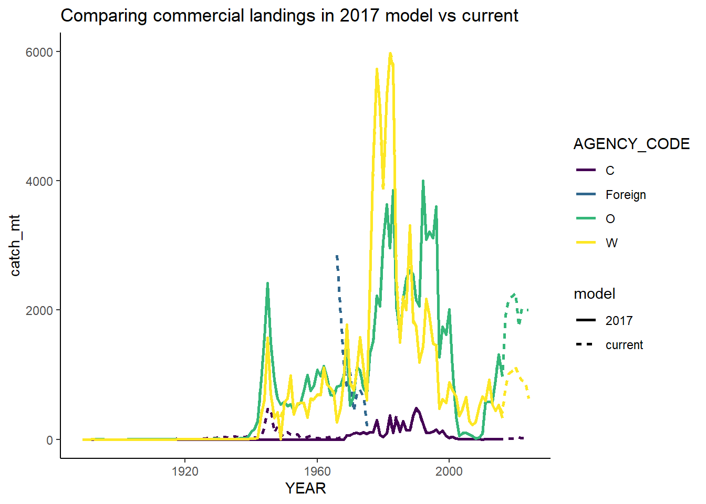
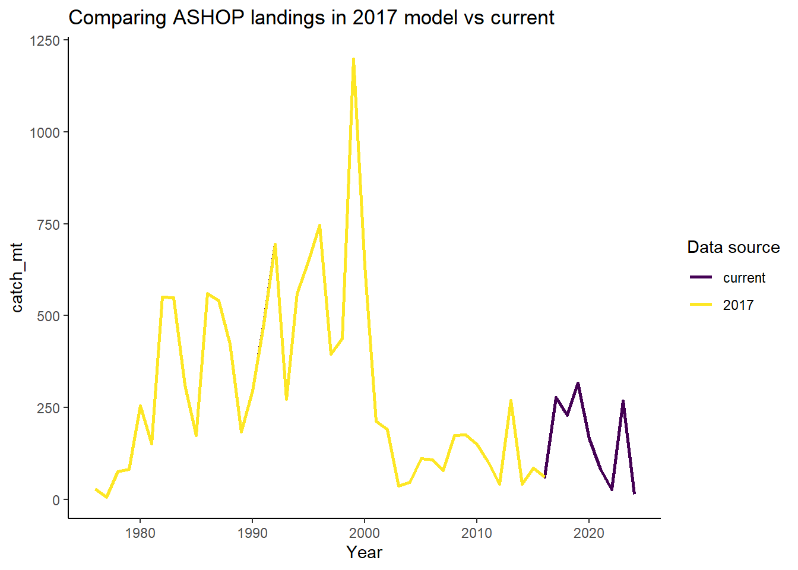
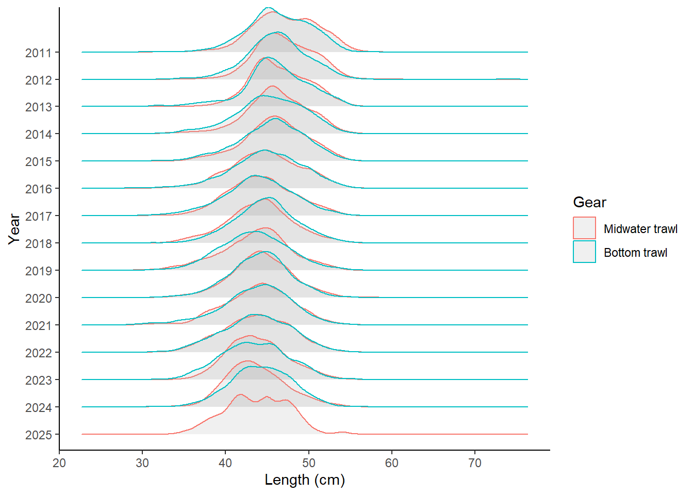
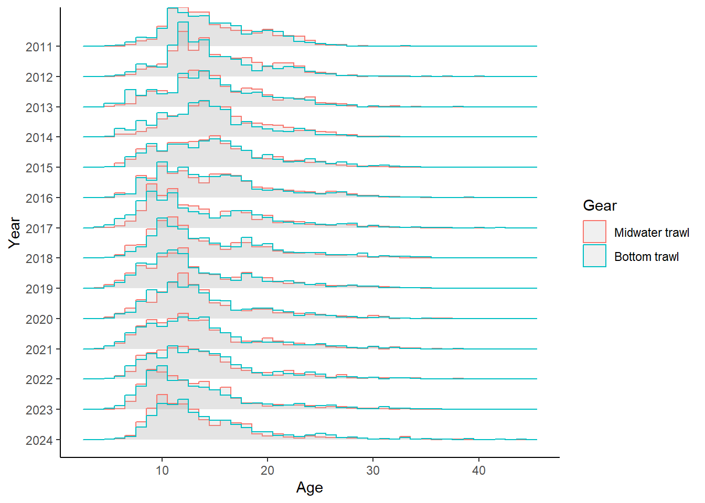
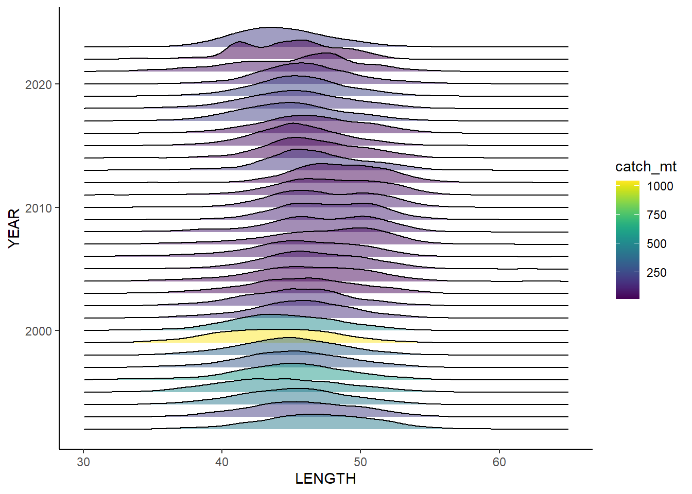

This documents data streams for use in the Northern Yellowtail Rockfish stock assessment. These data are NOT final and have NOT been fully QA/QC’ed! They are here for communication with the STAT and other collaborators. It is not official communication of the National Oceanic and Atmospheric Administration or the United States Department of Commerce.
Some summary figures:


Table of commercial landings by state, 1981 onward.
| YEAR | WA | Foreign | OR | CA |
|---|---|---|---|---|
| 1889 | 0.1 | 0 | 0.0 | 0.0 |
| 1890 | 0.1 | 0 | 0.0 | 0.0 |
| 1891 | 0.2 | 0 | 0.0 | 0.0 |
| 1892 | 0.3 | 0 | 2.1 | 0.0 |
| 1893 | 0.0 | 0 | 2.1 | 0.0 |
| 1894 | 0.0 | 0 | 2.1 | 0.0 |
| 1895 | 0.0 | 0 | 0.5 | 0.0 |
| 1896 | 0.0 | 0 | 0.1 | 0.0 |
| 1897 | 0.0 | 0 | 0.1 | 0.0 |
| 1898 | 0.0 | 0 | 0.1 | 0.0 |
| 1899 | 0.0 | 0 | 0.1 | 0.0 |
| 1900 | 0.0 | 0 | 0.2 | 0.0 |
| 1901 | 0.0 | 0 | 0.2 | 0.0 |
| 1902 | 0.0 | 0 | 0.3 | 0.0 |
| 1903 | 0.0 | 0 | 0.3 | 0.0 |
| 1904 | 0.3 | 0 | 0.4 | 0.0 |
| 1905 | 0.0 | 0 | 0.4 | 0.0 |
| 1906 | 0.0 | 0 | 0.5 | 0.0 |
| 1907 | 0.0 | 0 | 0.5 | 0.0 |
| 1908 | 0.1 | 0 | 0.6 | 0.0 |
| 1909 | 0.0 | 0 | 0.6 | 0.0 |
| 1910 | 0.0 | 0 | 0.7 | 0.0 |
| 1911 | 0.0 | 0 | 0.7 | 0.0 |
| 1912 | 0.0 | 0 | 0.8 | 0.0 |
| 1913 | 0.0 | 0 | 0.8 | 0.0 |
| 1914 | 0.0 | 0 | 0.9 | 0.0 |
| 1915 | 0.1 | 0 | 0.9 | 0.0 |
| 1916 | 0.0 | 0 | 1.0 | 2.5 |
| 1917 | 0.0 | 0 | 1.1 | 5.0 |
| 1918 | 2.6 | 0 | 1.1 | 11.6 |
| 1919 | 0.9 | 0 | 1.2 | 2.7 |
| 1920 | 0.7 | 0 | 1.2 | 3.6 |
| 1921 | 0.7 | 0 | 1.3 | 5.4 |
| 1922 | 0.3 | 0 | 1.3 | 4.1 |
| 1923 | 0.4 | 0 | 1.4 | 1.3 |
| 1924 | 1.1 | 0 | 1.4 | 3.6 |
| 1925 | 1.4 | 0 | 1.5 | 11.8 |
| 1926 | 2.4 | 0 | 1.5 | 11.6 |
| 1927 | 3.2 | 0 | 1.6 | 22.1 |
| 1928 | 2.8 | 0 | 2.6 | 19.0 |
| 1929 | 2.2 | 0 | 9.1 | 20.9 |
| 1930 | 3.1 | 0 | 12.5 | 30.3 |
| 1931 | 2.9 | 0 | 7.1 | 43.8 |
| 1932 | 1.1 | 0 | 1.8 | 33.0 |
| 1933 | 1.2 | 0 | 2.9 | 29.1 |
| 1934 | 3.7 | 0 | 3.1 | 24.9 |
| 1935 | 7.5 | 0 | 2.0 | 41.6 |
| 1936 | 3.6 | 0 | 10.1 | 37.4 |
| 1937 | 2.4 | 0 | 23.0 | 30.5 |
| 1938 | 5.4 | 0 | 22.9 | 39.6 |
| 1939 | 8.0 | 0 | 28.5 | 41.6 |
| 1940 | 11.6 | 0 | 119.0 | 19.7 |
| 1941 | 14.8 | 0 | 159.2 | 27.6 |
| 1942 | 19.6 | 0 | 282.7 | 22.6 |
| 1943 | 378.1 | 0 | 924.1 | 38.3 |
| 1944 | 616.4 | 0 | 1572.6 | 194.7 |
| 1945 | 1570.7 | 0 | 2420.2 | 470.0 |
| 1946 | 705.1 | 0 | 1507.1 | 477.7 |
| 1947 | 329.6 | 0 | 916.8 | 109.9 |
| 1948 | 418.1 | 0 | 627.0 | 200.7 |
| 1949 | 3.5 | 0 | 541.1 | 79.8 |
| 1950 | 572.7 | 0 | 581.1 | 43.1 |
| 1951 | 627.6 | 0 | 512.9 | 108.2 |
| 1952 | 985.4 | 0 | 537.3 | 81.4 |
| 1953 | 387.1 | 0 | 444.6 | 56.4 |
| 1954 | 559.3 | 0 | 530.7 | 74.3 |
| 1955 | 568.3 | 0 | 568.1 | 18.4 |
| 1956 | 565.7 | 0 | 755.2 | 20.9 |
| 1957 | 344.2 | 0 | 996.7 | 34.2 |
| 1958 | 627.9 | 0 | 752.0 | 49.9 |
| 1959 | 620.2 | 0 | 824.6 | 29.2 |
| 1960 | 692.2 | 0 | 1075.8 | 18.8 |
| 1961 | 688.1 | 0 | 977.5 | 14.1 |
| 1962 | 1106.6 | 0 | 1131.4 | 12.0 |
| 1963 | 851.7 | 0 | 960.8 | 32.7 |
| 1964 | 791.5 | 0 | 687.7 | 38.0 |
| 1965 | 725.3 | 0 | 675.1 | 32.1 |
| 1966 | 265.6 | 2845 | 818.9 | 15.5 |
| 1967 | 484.7 | 1956 | 835.2 | 30.0 |
| 1968 | 915.4 | 1187 | 981.8 | 30.3 |
| 1969 | 1776.8 | 786 | 1378.6 | 58.9 |
| 1970 | 879.2 | 1031 | 521.8 | 60.7 |
| 1971 | 760.8 | 434 | 674.2 | 92.2 |
| 1972 | 1080.2 | 716 | 1113.7 | 99.8 |
| 1973 | 1580.0 | 770 | 1071.8 | 85.8 |
| 1974 | 1073.8 | 654 | 780.2 | 109.9 |
| 1975 | 607.5 | 222 | 707.5 | 86.9 |
| 1976 | 2471.4 | 235 | 1338.8 | 111.6 |
| 1977 | 4289.6 | 0 | 1513.1 | 111.1 |
| 1978 | 5729.5 | 0 | 2221.5 | 297.2 |
| 1979 | 5140.9 | 0 | 2061.9 | 67.5 |
| 1980 | 3936.4 | 0 | 3048.5 | 37.5 |
| 1981 | 5325.9 | 0 | 3633.5 | 94.4 |
| 1982 | 5993.4 | 0 | 2960.2 | 331.4 |
| 1983 | 5812.9 | 0 | 3857.1 | 105.3 |
| 1984 | 2574.5 | 0 | 2071.7 | 357.7 |
| 1985 | 1550.5 | 0 | 1613.9 | 120.2 |
| 1986 | 2229.1 | 0 | 2163.1 | 268.9 |
| 1987 | 1990.4 | 0 | 2484.0 | 141.6 |
| 1988 | 3231.7 | 0 | 2613.8 | 144.7 |
| 1989 | 1814.4 | 0 | 2551.0 | 354.0 |
| 1990 | 1725.6 | 0 | 2147.3 | 466.4 |
| 1991 | 1192.4 | 0 | 2066.7 | 405.8 |
| 1992 | 1418.3 | 0 | 3998.1 | 231.9 |
| 1993 | 2162.2 | 0 | 3090.7 | 102.3 |
| 1994 | 1908.7 | 0 | 3215.4 | 104.6 |
| 1995 | 1482.7 | 0 | 3113.7 | 115.9 |
| 1996 | 1451.5 | 0 | 3599.3 | 153.2 |
| 1997 | 476.6 | 0 | 1271.2 | 89.6 |
| 1998 | 617.1 | 0 | 1744.2 | 132.6 |
| 1999 | 563.6 | 0 | 1624.2 | 60.9 |
| 2000 | 877.6 | 0 | 2012.2 | 21.0 |
| 2001 | 756.3 | 0 | 1101.8 | 41.2 |
| 2002 | 659.9 | 0 | 350.2 | 16.0 |
| 2003 | 358.1 | 0 | 55.2 | 1.1 |
| 2004 | 467.3 | 0 | 97.8 | 3.7 |
| 2005 | 651.0 | 0 | 103.0 | 0.8 |
| 2006 | 280.3 | 0 | 77.4 | 0.8 |
| 2007 | 220.3 | 0 | 57.0 | 1.4 |
| 2008 | 262.4 | 0 | 14.0 | 1.7 |
| 2009 | 506.2 | 0 | 32.4 | 0.6 |
| 2010 | 664.6 | 0 | 88.9 | 0.2 |
| 2011 | 601.1 | 0 | 594.6 | 0.3 |
| 2012 | 924.2 | 0 | 593.7 | 0.3 |
| 2013 | 538.4 | 0 | 577.6 | 0.8 |
| 2014 | 442.0 | 0 | 927.9 | 0.7 |
| 2015 | 528.3 | 0 | 1310.0 | 4.3 |
| 2016 | 417.2 | 0 | 988.8 | 1.3 |
| 2017 | 789.7 | 0 | 1908.6 | 4.0 |
| 2018 | 1015.4 | 0 | 2170.4 | 11.0 |
| 2019 | 1064.2 | 0 | 2214.1 | 11.2 |
| 2020 | 1128.7 | 0 | 2264.3 | 14.0 |
| 2021 | 983.8 | 0 | 1745.7 | 28.1 |
| 2022 | 917.8 | 0 | 2020.9 | 19.2 |
| 2023 | 893.5 | 0 | 1999.5 | 20.7 |
| 2024 | 633.0 | 0 | 2003.8 | 27.1 |
Note that the 2017 assessment did not include foreign landings. This foreign reconstruction is from Rogers (2003).
WDFW has alerted the STAT these do not include all tribal catches in recent years. 1981-2000 are from the UPOP/URCK reconstruction, summing catches for YTRK and YTR1. 2001 onward comes from PacFIN
Oregon landings were provided directly to the STAT from ODFW and come from PacFIN and a UPOP/URCK reconstruction.
California landings are for catch landed into Del Norte and Humboldt counties only. Data sources are:
In the Ralston et al. (2010) reconstruction, the northernmost region (region 2) includes Crescent City, Eureka AND Fort Bragg port area groups. Catch in the Crescent City and Eureka port area groups (i.e., Del Norte and Humboldt counties) is estimated based on the fraction of catch in Crescent City and Eureka divided by catch in all of region 2 during the first five years of CALCOM. The vast majority of the catch is in the two northern port areas (96%). All supplementary catches in the Ralston reconstruction caught off the coast of Oregon, but landed into California are included.

| YEAR | catch_mt |
|---|---|
| 1976 | 29.5 |
| 1977 | 7.4 |
| 1978 | 75.4 |
| 1979 | 82.0 |
| 1980 | 255.4 |
| 1981 | 152.6 |
| 1982 | 551.2 |
| 1983 | 548.4 |
| 1984 | 312.0 |
| 1985 | 174.2 |
| 1986 | 560.1 |
| 1987 | 541.4 |
| 1988 | 423.4 |
| 1989 | 184.6 |
| 1990 | 295.1 |
| 1991 | 480.0 |
| 1992 | 694.8 |
| 1993 | 273.4 |
| 1994 | 560.4 |
| 1995 | 646.8 |
| 1996 | 746.2 |
| 1997 | 396.3 |
| 1998 | 438.1 |
| 1999 | 1198.6 |
| 2000 | 635.3 |
| 2001 | 213.4 |
| 2002 | 189.9 |
| 2003 | 36.6 |
| 2004 | 47.6 |
| 2005 | 112.2 |
| 2006 | 108.7 |
| 2007 | 78.7 |
| 2008 | 175.0 |
| 2009 | 176.2 |
| 2010 | 150.1 |
| 2011 | 101.2 |
| 2012 | 43.0 |
| 2013 | 269.0 |
| 2014 | 42.0 |
| 2015 | 86.4 |
| 2016 | 62.3 |
| 2017 | 278.1 |
| 2018 | 229.9 |
| 2019 | 316.9 |
| 2020 | 166.9 |
| 2021 | 82.4 |
| 2022 | 27.4 |
| 2023 | 267.6 |
| 2024 | 14.5 |
| YEAR | OR (mt) | WA (mt) | WA (num) | CA (mt) |
|---|---|---|---|---|
| 1928 | 0.0 | 0.0 | 0 | 0.1 |
| 1929 | 0.0 | 0.0 | 0 | 0.2 |
| 1930 | 0.0 | 0.0 | 0 | 0.2 |
| 1931 | 0.0 | 0.0 | 0 | 0.3 |
| 1932 | 0.0 | 0.0 | 0 | 0.3 |
| 1933 | 0.0 | 0.0 | 0 | 0.4 |
| 1934 | 0.0 | 0.0 | 0 | 0.5 |
| 1935 | 0.0 | 0.0 | 0 | 0.5 |
| 1936 | 0.0 | 0.0 | 0 | 0.6 |
| 1937 | 0.0 | 0.0 | 0 | 0.7 |
| 1938 | 0.0 | 0.0 | 0 | 0.7 |
| 1939 | 0.0 | 0.0 | 0 | 0.6 |
| 1940 | 0.0 | 0.0 | 0 | 0.9 |
| 1941 | 0.0 | 0.0 | 0 | 0.8 |
| 1942 | 0.0 | 0.0 | 0 | 0.4 |
| 1943 | 0.0 | 0.0 | 0 | 0.4 |
| 1944 | 0.0 | 0.0 | 0 | 0.3 |
| 1945 | 0.0 | 0.0 | 0 | 0.5 |
| 1946 | 0.0 | 0.0 | 0 | 0.8 |
| 1947 | 0.0 | 0.0 | 0 | 0.6 |
| 1948 | 0.0 | 0.0 | 0 | 1.2 |
| 1949 | 0.0 | 0.0 | 0 | 1.6 |
| 1950 | 0.0 | 0.0 | 0 | 2.0 |
| 1951 | 0.0 | 0.0 | 0 | 2.2 |
| 1952 | 0.0 | 0.0 | 0 | 2.0 |
| 1953 | 0.0 | 0.0 | 0 | 1.7 |
| 1954 | 0.0 | 0.0 | 0 | 2.1 |
| 1955 | 0.0 | 0.0 | 0 | 2.5 |
| 1956 | 0.0 | 0.0 | 0 | 2.8 |
| 1957 | 0.0 | 0.0 | 0 | 2.4 |
| 1958 | 0.0 | 0.0 | 0 | 4.1 |
| 1959 | 0.0 | 0.0 | 0 | 3.8 |
| 1960 | 0.0 | 0.0 | 0 | 2.8 |
| 1961 | 0.0 | 0.0 | 0 | 2.1 |
| 1962 | 0.0 | 0.0 | 0 | 2.4 |
| 1963 | 0.0 | 0.0 | 0 | 1.7 |
| 1964 | 0.0 | 0.0 | 0 | 1.3 |
| 1965 | 0.0 | 0.0 | 0 | 2.1 |
| 1966 | 0.0 | 0.0 | 0 | 2.3 |
| 1967 | 0.0 | 36.2 | 38119 | 2.3 |
| 1968 | 0.0 | 2.1 | 2235 | 2.5 |
| 1969 | 0.0 | 2.1 | 2168 | 3.1 |
| 1970 | 0.0 | 12.8 | 13510 | 3.5 |
| 1971 | 0.0 | 11.5 | 0 | 2.7 |
| 1972 | 0.0 | 12.0 | 12653 | 3.6 |
| 1973 | 0.0 | 19.0 | 20014 | 4.7 |
| 1974 | 0.0 | 14.4 | 0 | 5.0 |
| 1975 | 0.0 | 11.2 | 11813 | 5.0 |
| 1976 | 0.0 | 15.4 | 16248 | 6.0 |
| 1977 | 0.0 | 7.2 | 7552 | 5.3 |
| 1978 | 0.0 | 11.9 | 12544 | 4.8 |
| 1979 | 18.6 | 3.9 | 4128 | 5.1 |
| 1980 | 22.7 | 2.8 | 2931 | 4.3 |
| 1981 | 15.7 | 3.9 | 4075 | 9.2 |
| 1982 | 24.7 | 1.7 | 1747 | 27.4 |
| 1983 | 0.0 | 2.7 | 2803 | 13.8 |
| 1984 | 28.3 | 3.3 | 3476 | 6.6 |
| 1985 | 7.5 | 4.8 | 5022 | 5.9 |
| 1986 | 27.7 | 8.7 | 9185 | 4.8 |
| 1987 | 24.8 | 7.7 | 8141 | 5.8 |
| 1988 | 12.5 | 6.9 | 7311 | 4.2 |
| 1989 | 9.5 | 6.3 | 6639 | 6.2 |
| 1990 | 16.3 | 15.2 | 0 | 4.3 |
| 1991 | 29.8 | 33.4 | 0 | 3.1 |
| 1992 | 32.1 | 35.3 | 0 | 2.0 |
| 1993 | 79.8 | 46.4 | 0 | 1.3 |
| 1994 | 22.7 | 20.2 | 0 | 0.7 |
| 1995 | 35.5 | 16.2 | 0 | 0.6 |
| 1996 | 20.8 | 22.1 | 0 | 1.6 |
| 1997 | 21.6 | 26.8 | 0 | 6.6 |
| 1998 | 31.2 | 44.3 | 0 | 1.8 |
| 1999 | 56.3 | 16.8 | 0 | 3.1 |
| 2000 | 20.6 | 19.1 | 0 | 2.1 |
| 2001 | 15.3 | 12.6 | 0 | 0.8 |
| 2002 | 19.6 | 3.5 | 0 | 0.4 |
| 2003 | 15.1 | 11.7 | 0 | 0.3 |
| 2004 | 11.3 | 18.2 | 0 | 0.2 |
| 2005 | 12.5 | 15.8 | 0 | 0.2 |
| 2006 | 8.3 | 10.2 | 0 | 0.2 |
| 2007 | 6.8 | 14.7 | 0 | 0.5 |
| 2008 | 5.6 | 14.4 | 0 | 0.2 |
| 2009 | 10.2 | 29.3 | 0 | 1.0 |
| 2010 | 8.3 | 44.3 | 0 | 0.3 |
| 2011 | 11.6 | 53.4 | 0 | 0.5 |
| 2012 | 13.8 | 18.8 | 0 | 0.7 |
| 2013 | 16.1 | 23.5 | 0 | 0.6 |
| 2014 | 11.4 | 42.7 | 0 | 0.3 |
| 2015 | 22.1 | 26.3 | 0 | 0.6 |
| 2016 | 7.7 | 36.7 | 0 | 0.2 |
| 2017 | 14.0 | 47.4 | 0 | 0.5 |
| 2018 | 35.6 | 38.2 | 0 | 1.0 |
| 2019 | 30.4 | 48.6 | 0 | 1.3 |
| 2020 | 38.4 | 60.1 | 0 | 0.6 |
| 2021 | 27.9 | 61.9 | 0 | 1.1 |
| 2022 | 51.7 | 68.9 | 0 | 1.2 |
| 2023 | 82.9 | 88.9 | 0 | 3.1 |
| 2024 | 0.0 | 60.8 | 0 | 1.0 |
We are planning to use WA (mt) for all years, but show WA (num) to compare with raw data.
From WA sport biodata, calculate average length of samples collected prior to 1990. This included 48 samples from 1979, 1981, and 1982. The next available samples are in 1995, so we did not use length data from samples in years shortly after the historical reconstruction applies.
Calculate average weight using the unsexed version of the weight-length relationship calculated from WCGBTS data.
Catches in 1971 and 1974 are not available, so are calculated as the average of the two previous and two subsequent years.
From Albin et al. (1993), which covers 1981-1986, calculate two ratios:
From CRFS data for 2005-2010, calculate total catch in Redwoods district / total catch in N. CA sub-region
From MRFSS data, calculate total catch by year in N. CA sub-region
For CA rec catch estimates for the assessment:
In addition, Albin ratio (1) is used to calculate what fraction of N. CA catches from the Ralston recreational reconstruction are in the assessment area.
Initial length sample sizes after running PacFIN.Utilities::cleanPacFIN():
AGE_METHOD1 AGE_METHOD2 AGE_METHOD3 Age method for best age n
1 B B B B 2345
2 B B <NA> 1
3 B B <NA> B 5138
4 B <NA> <NA> B 146253
5 B <NA> <NA> <NA> 43
6 L <NA> <NA> L 1
7 S <NA> <NA> S 17943
8 T <NA> <NA> T 2
9 <NA> <NA> <NA> <NA> 78532| year | CA | OR | WA | total |
|---|---|---|---|---|
| 1968 | 0 | 0 | 1225 | 1225 |
| 1969 | 0 | 0 | 1852 | 1852 |
| 1970 | 0 | 0 | 981 | 981 |
| 1971 | 0 | 0 | 1089 | 1089 |
| 1972 | 0 | 0 | 1252 | 1252 |
| 1973 | 0 | 0 | 697 | 697 |
| 1974 | 0 | 0 | 350 | 350 |
| 1975 | 0 | 0 | 458 | 458 |
| 1976 | 0 | 0 | 2776 | 2776 |
| 1977 | 0 | 0 | 778 | 778 |
| 1978 | 132 | 0 | 1876 | 2008 |
| 1979 | 41 | 0 | 1599 | 1640 |
| 1980 | 74 | 0 | 3705 | 3779 |
| 1981 | 61 | 607 | 3900 | 4568 |
| 1982 | 184 | 1499 | 3496 | 5179 |
| 1983 | 278 | 199 | 2366 | 2843 |
| 1984 | 704 | 1098 | 3200 | 5002 |
| 1985 | 261 | 2104 | 3500 | 5865 |
| 1986 | 181 | 1156 | 2992 | 4329 |
| 1987 | 145 | 1891 | 2046 | 4082 |
| 1988 | 37 | 1670 | 1650 | 3357 |
| 1989 | 230 | 2055 | 1650 | 3935 |
| 1990 | 192 | 1802 | 1875 | 3869 |
| 1991 | 265 | 1296 | 2000 | 3561 |
| 1992 | 737 | 2490 | 1700 | 4927 |
| 1993 | 261 | 2022 | 1800 | 4083 |
| 1994 | 847 | 2641 | 3562 | 7050 |
| 1995 | 436 | 2242 | 3505 | 6183 |
| 1996 | 660 | 2259 | 3154 | 6073 |
| 1997 | 277 | 4092 | 2501 | 6870 |
| 1998 | 618 | 3235 | 2105 | 5958 |
| 1999 | 350 | 3578 | 2195 | 6123 |
| 2000 | 141 | 3005 | 2283 | 5429 |
| 2001 | 204 | 2832 | 2045 | 5081 |
| 2002 | 105 | 1538 | 1663 | 3306 |
| 2003 | 41 | 701 | 1629 | 2371 |
| 2004 | 64 | 1341 | 1696 | 3101 |
| 2005 | 67 | 980 | 1173 | 2220 |
| 2006 | 100 | 1251 | 968 | 2319 |
| 2007 | 106 | 1196 | 2515 | 3817 |
| 2008 | 41 | 585 | 1841 | 2467 |
| 2009 | 60 | 855 | 1450 | 2365 |
| 2010 | 2 | 1618 | 1530 | 3150 |
| 2011 | 72 | 1816 | 1415 | 3303 |
| 2012 | 131 | 1915 | 2231 | 4277 |
| 2013 | 203 | 1269 | 1275 | 2747 |
| 2014 | 174 | 1898 | 1309 | 3381 |
| 2015 | 196 | 2393 | 1760 | 4349 |
| 2016 | 199 | 3145 | 1587 | 4931 |
| 2017 | 383 | 3040 | 2470 | 5893 |
| 2018 | 359 | 2950 | 1651 | 4960 |
| 2019 | 334 | 2782 | 1146 | 4262 |
| 2020 | 168 | 1932 | 551 | 2651 |
| 2021 | 633 | 1815 | 1157 | 3605 |
| 2022 | 184 | 2443 | 1469 | 4096 |
| 2023 | 302 | 2145 | 1415 | 3862 |
| 2024 | 471 | 2064 | 1866 | 4401 |
Age sample sizes:
| year | CA | OR | WA | total |
|---|---|---|---|---|
| 1968 | 0 | 0 | 0 | 0 |
| 1969 | 0 | 0 | 0 | 0 |
| 1970 | 0 | 0 | 0 | 0 |
| 1971 | 0 | 0 | 0 | 0 |
| 1972 | 0 | 0 | 0 | 0 |
| 1973 | 0 | 0 | 0 | 0 |
| 1974 | 0 | 0 | 123 | 123 |
| 1975 | 0 | 0 | 305 | 305 |
| 1976 | 0 | 0 | 1281 | 1281 |
| 1977 | 0 | 0 | 296 | 296 |
| 1978 | 0 | 0 | 599 | 599 |
| 1979 | 0 | 0 | 1560 | 1560 |
| 1980 | 73 | 0 | 3627 | 3700 |
| 1981 | 61 | 593 | 3741 | 4395 |
| 1982 | 162 | 1381 | 3430 | 4973 |
| 1983 | 234 | 199 | 2350 | 2783 |
| 1984 | 685 | 1092 | 3192 | 4969 |
| 1985 | 260 | 1987 | 3498 | 5745 |
| 1986 | 164 | 946 | 2985 | 4095 |
| 1987 | 97 | 1891 | 2092 | 4080 |
| 1988 | 36 | 1670 | 1645 | 3351 |
| 1989 | 229 | 2053 | 1643 | 3925 |
| 1990 | 187 | 1792 | 1872 | 3851 |
| 1991 | 265 | 1289 | 1844 | 3398 |
| 1992 | 150 | 2424 | 1696 | 4270 |
| 1993 | 0 | 1981 | 1798 | 3779 |
| 1994 | 139 | 2637 | 1747 | 4523 |
| 1995 | 91 | 2203 | 1900 | 4194 |
| 1996 | 244 | 2161 | 1645 | 4050 |
| 1997 | 76 | 3735 | 1774 | 5585 |
| 1998 | 47 | 2263 | 2092 | 4402 |
| 1999 | 82 | 3383 | 2180 | 5645 |
| 2000 | 25 | 2863 | 2249 | 5137 |
| 2001 | 177 | 2749 | 2043 | 4969 |
| 2002 | 68 | 1511 | 1654 | 3233 |
| 2003 | 0 | 584 | 1623 | 2207 |
| 2004 | 32 | 1328 | 1667 | 3027 |
| 2005 | 66 | 892 | 1169 | 2127 |
| 2006 | 93 | 1222 | 749 | 2064 |
| 2007 | 0 | 475 | 1397 | 1872 |
| 2008 | 41 | 575 | 1077 | 1693 |
| 2009 | 4 | 638 | 940 | 1582 |
| 2010 | 2 | 1080 | 829 | 1911 |
| 2011 | 26 | 1005 | 811 | 1842 |
| 2012 | 28 | 1306 | 1279 | 2613 |
| 2013 | 12 | 1103 | 749 | 1864 |
| 2014 | 110 | 1828 | 713 | 2651 |
| 2015 | 56 | 2158 | 900 | 3114 |
| 2016 | 0 | 2201 | 1184 | 3385 |
| 2017 | 0 | 2465 | 1574 | 4039 |
| 2018 | 0 | 2081 | 1144 | 3225 |
| 2019 | 0 | 1810 | 1014 | 2824 |
| 2020 | 0 | 1414 | 497 | 1911 |
| 2021 | 0 | 1295 | 945 | 2240 |
| 2022 | 0 | 1878 | 869 | 2747 |
| 2023 | 0 | 1555 | 816 | 2371 |
| 2024 | 0 | 1242 | 858 | 2100 |
The length and age distribution associated with the midwater trawl (MDT) code in PacFIN is is very similar to bottom trawl catch (everything else in the TWL gear group).


VERY tentative length sample sizes. I anticipate this is biased high as I have done no filtering.
| Year | WA_RETAINED | OR_RETAINED | OR_RELEASED | CA_RETAINED | CA_RELEASED | OR (MRFSS) | CA (MRFSS) | WA (MRFSS) |
|---|---|---|---|---|---|---|---|---|
| 1980 | 0 | 0 | 0 | 0 | 0 | 0 | 12 | 224 |
| 1981 | 0 | 0 | 0 | 0 | 0 | 0 | 2 | 131 |
| 1982 | 0 | 0 | 0 | 0 | 0 | 0 | 20 | 61 |
| 1983 | 0 | 0 | 0 | 0 | 0 | 0 | 25 | 34 |
| 1984 | 0 | 0 | 0 | 0 | 0 | 0 | 33 | 24 |
| 1985 | 0 | 0 | 0 | 0 | 0 | 0 | 76 | 50 |
| 1986 | 0 | 0 | 0 | 0 | 0 | 0 | 45 | 22 |
| 1987 | 0 | 0 | 0 | 0 | 0 | 0 | 6 | 39 |
| 1988 | 0 | 0 | 0 | 0 | 0 | 0 | 0 | 14 |
| 1989 | 0 | 0 | 0 | 0 | 0 | 0 | 4 | 1 |
| 1993 | 3 | 0 | 0 | 0 | 0 | 384 | 20 | 0 |
| 1994 | 34 | 0 | 0 | 0 | 0 | 592 | 47 | 0 |
| 1995 | 26 | 0 | 0 | 0 | 0 | 557 | 10 | 0 |
| 1996 | 27 | 0 | 0 | 0 | 0 | 284 | 18 | 5 |
| 1997 | 147 | 0 | 0 | 0 | 0 | 262 | 34 | 8 |
| 1998 | 53 | 0 | 0 | 0 | 0 | 476 | 5 | 130 |
| 1999 | 23 | 326 | 0 | 0 | 0 | 362 | 1 | 9 |
| 2000 | 0 | 192 | 0 | 0 | 0 | 243 | 1 | 3 |
| 2001 | 0 | 704 | 0 | 0 | 0 | 83 | 9 | 5 |
| 2002 | 194 | 1457 | 0 | 0 | 0 | 182 | 1 | 3 |
| 2003 | 800 | 1519 | 221 | 0 | 0 | 31 | 6 | 0 |
| 2004 | 675 | 1233 | 162 | 26 | 0 | 0 | 0 | 0 |
| 2005 | 869 | 1754 | 162 | 29 | 0 | 0 | 0 | 0 |
| 2006 | 362 | 1498 | 87 | 29 | 0 | 0 | 0 | 0 |
| 2007 | 313 | 1583 | 138 | 77 | 0 | 0 | 0 | 0 |
| 2008 | 189 | 1896 | 147 | 37 | 9 | 0 | 0 | 0 |
| 2009 | 464 | 2525 | 153 | 69 | 1 | 0 | 0 | 0 |
| 2010 | 218 | 2318 | 144 | 49 | 3 | 0 | 0 | 0 |
| 2011 | 391 | 2264 | 54 | 45 | 5 | 0 | 0 | 0 |
| 2012 | 228 | 2673 | 81 | 125 | 0 | 0 | 0 | 0 |
| 2013 | 356 | 2121 | 61 | 114 | 5 | 0 | 0 | 0 |
| 2014 | 680 | 1822 | 116 | 57 | 19 | 0 | 0 | 0 |
| 2015 | 683 | 1869 | 150 | 53 | 14 | 0 | 0 | 0 |
| 2016 | 928 | 800 | 70 | 24 | 1 | 0 | 0 | 0 |
| 2017 | 1326 | 1227 | 120 | 74 | 6 | 0 | 0 | 0 |
| 2018 | 908 | 2556 | 51 | 116 | 14 | 0 | 0 | 0 |
| 2019 | 1800 | 2787 | 78 | 103 | 0 | 0 | 0 | 0 |
| 2020 | 891 | 129 | 0 | 0 | 0 | 0 | 0 | 0 |
| 2021 | 831 | 1827 | 0 | 74 | 2 | 0 | 0 | 0 |
| 2022 | 669 | 1825 | 70 | 52 | 5 | 0 | 0 | 0 |
| 2023 | 1534 | 1675 | 159 | 144 | 0 | 0 | 0 | 0 |
Retained fish tend to be larger than released fish. However, there are very few released fish. Washington has no measured released fish in RecFIN. Between Oregon and California, 94.8% of lengths are for retained fish. Some fraction of those released fish is assumed to have survived, which would skew the ratio even more towards retained fish.
We plan to exclude released fish from composition data.
The fish in Washington also look slightly larger than those in Oregon and California. This difference is more pronounced than it is in survey data, indicating a possible selectivity effect.
| YEAR | n_length |
|---|---|
| 1976 | 206 |
| 1978 | 277 |
| 1979 | 5 |
| 1980 | 3111 |
| 1982 | 177 |
| 1985 | 43 |
| 1989 | 14 |
| 1992 | 4641 |
| 1993 | 2435 |
| 1994 | 5024 |
| 1995 | 2568 |
| 1996 | 4127 |
| 1997 | 5201 |
| 1998 | 2898 |
| 1999 | 5532 |
| 2000 | 3847 |
| 2001 | 1573 |
| 2002 | 832 |
| 2003 | 2134 |
| 2004 | 2864 |
| 2005 | 5094 |
| 2006 | 5808 |
| 2007 | 5557 |
| 2008 | 4731 |
| 2009 | 3571 |
| 2010 | 5709 |
| 2011 | 4809 |
| 2012 | 1482 |
| 2013 | 1844 |
| 2014 | 1314 |
| 2015 | 1646 |
| 2016 | 4213 |
| 2017 | 8299 |
| 2018 | 4330 |
| 2019 | 3899 |
| 2020 | 922 |
| 2021 | 235 |
| 2022 | 97 |
| 2023 | 1286 |
| 2024 | 353 |
Figure of length frequencies in at-sea hake fishery for prioritizing which years to age.

STAT is working on it!